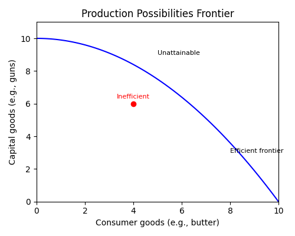
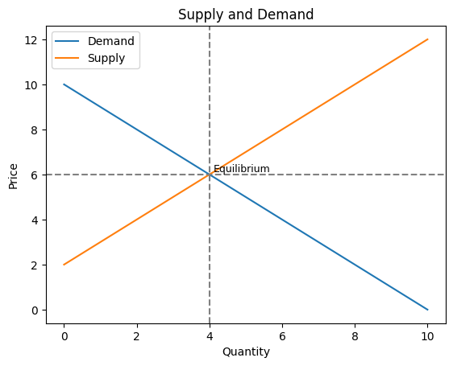

Economics begins with the idea of scarcity —
humans have virtually unlimited wants but resources (time,
labour, land and capital) are limited. Because we can’t
have everything we want, individuals and societies must
decide what to produce, how to produce it and for whom.
These decisions involve trade‑offs. The
opportunity cost of any choice is the value of
the next best alternative that is given up. For example,
if a student spends time studying economics instead of working,
the foregone wages are part of the opportunity cost. Recognising
opportunity costs helps people make better decisions about
resource use. Real‑world events underscore these concepts:
during the COVID‑19 pandemic, shortages of ventilators and protective equipment
forced governments to allocate limited supplies to hospitals, and
semiconductor shortages constrained automobile and smartphone production
worldwide. In everyday life, choosing to spend money on a night out may
mean delaying the purchase of new shoes. Scarcity and choice are
therefore at the heart of economic reasoning.
Factors of Production and Production Possibilities
Economists categorise inputs into four
factors of production: land (natural
resources), labour (human effort), capital (machinery,
tools and buildings) and entrepreneurship (the ability to
organise and innovate). Some economists also emphasise
human capital—the skills and education embodied in the
workforce—as a key factor. Each factor earns income:
land earns rent, labour earns wages, capital earns
interest and entrepreneurs earn profits. To illustrate
the trade‑offs society faces, economists use a
production possibilities curve (PPC), sometimes called
the production possibilities frontier. It plots the
maximum output combinations of two goods that can be
produced with a fixed set of resources and technology. Points
on the curve are efficient; points inside represent
under‑utilised resources (such as unemployment), while
points outside are unattainable without more resources or
better technology. When resources or technology improve—
for example, when a country invests in education or
develops better machinery—the PPC shifts outward. A
classic example pits “guns” (defence goods) against
“butter” (consumer goods): allocating more resources to
defence reduces the output of consumer goods, and vice
versa. Over time, increases in the labour force, capital
investment and technological progress allow economies to
produce more of both goods, effectively expanding the
frontier.

The Production Possibilities Frontier (PPF) illustrates the
trade‑off between two types of goods—in this case,
consumer goods and capital goods. Points on the curve are
efficient; the red dot inside the curve shows an
inefficient combination, while points beyond the curve are
unattainable without more resources or better technology.
Supply, Demand and Market Equilibrium
Supply and demand describe how prices are
determined in a market. Demand reflects the quantities
consumers are willing to buy at different prices; the
demand curve slopes downward because people buy more
when prices are lower. Supply reflects the quantities
producers are willing to sell; the supply curve
slopes upward because firms produce more when prices are
higher. The price at which quantity supplied equals
quantity demanded is the equilibrium price.
If the price is above equilibrium, excess supply leads
sellers to lower prices; if it’s below, shortages push
prices up. Changes in factors such as income, technology
or input costs shift the curves and create a new
equilibrium. For example, a drought that reduces the
harvest of corn shifts the supply curve to the left and
raises the equilibrium price, while rising household
incomes shift the demand curve for restaurant meals to
the right and increase both price and quantity. The
figure below illustrates a simplified supply‑and‑demand
diagram.

A simplified supply‑and‑demand diagram shows the downward‑sloping demand curve and the
upward‑sloping supply curve. The intersection (marked by dashed lines) represents the
equilibrium price and quantity where the market clears.
Gross Domestic Product (GDP)
Gross Domestic Product is the market value of
all final goods and services produced within a country’s
borders in a given period. Economists track the
percentage change in GDP from one quarter or year to the
next as a barometer of economic health. To make
comparisons over time, analysts adjust for changes in
prices: real or chained GDP removes the effects of
inflation and shows changes in actual output. Policymakers
use GDP data to set spending and tax policy, businesses use
it to plan investment and production, and individuals look
to GDP growth to gauge job prospects.
Economic growth is uneven. After the severe 2008–09
financial crisis, the U.S. economy entered its longest
expansion on record, lasting from June 2009 through
February 2020. Real GDP grew by roughly 2–3 % per year,
unemployment declined and corporate profits rose.
In early 2020 the COVID‑19 pandemic brought a
sudden halt to activity: real GDP contracted at an
annualised rate of about 32 % in the second quarter, and
the unemployment rate shot up to 14.7 %. Massive
fiscal stimulus and easy monetary policy helped fuel a
swift rebound. The chart below illustrates an index of
real GDP over time, with noticeable dips during the 2008–09
recession and the 2020 pandemic.
An illustrative real GDP index (base year 2000 = 100) shows
steady growth interrupted by recessions. The shaded
areas highlight the 2008–09 financial crisis and the
2020 pandemic, when GDP contracted sharply before
recovering.
Inflation and Purchasing Power
Inflation refers to a general, sustained increase in the
prices of goods and services across the economy, not just
isolated changes in the price of one product. When
inflation rises, the purchasing power of money declines:
each dollar buys fewer groceries, bus rides or textbooks.
Central banks target low and stable inflation (around 2 %
per year in the U.S. and euro area) because very high
inflation can disrupt economic planning and erode savings,
while deflation (falling prices) may discourage
consumption and investment.
In the 1970s, oil price shocks and expansive monetary
policy pushed inflation into double‑digit territory in many
countries, leading to stagflation—high inflation and high
unemployment. More recently, from mid‑2021 through 2022,
global supply‑chain snarls, a rebound in energy demand and
fiscal stimulus measures drove U.S. inflation to its
highest pace in four decades. Consumer prices rose
roughly 9 % year‑on‑year in June 2022, far above the
Federal Reserve’s goal, prompting aggressive interest rate
hikes. According to the Bureau of Labor Statistics, the
purchasing power of the dollar fell about 7.4 % between
2021 and 2022. These episodes underscore why savers need
to invest in assets that can outpace inflation over the
long term; holding cash alone means your money slowly
loses value.
Unemployment
A person is officially classified as unemployed if
they are jobless, have actively looked for work in the
past four weeks and are available to start a job. The
unemployment rate equals the number of unemployed divided
by the labour force (the employed plus the unemployed).
Economists also monitor broader measures of labour
underutilisation, such as the U‑6 rate, which adds
discouraged workers who have stopped looking for jobs and
part‑time workers who want full‑time hours.
High unemployment means the economy is operating below its
potential output—factories sit idle and families face
hardship. Very low unemployment can lead to labour
shortages and wage inflation. Historical data provide
perspective: during the Great Depression of the 1930s,
unemployment in the U.S. approached 25 %, while in the
early 2000s it hovered around 4 %. In April 2020,
lockdowns to slow the spread of COVID‑19 caused the U.S.
unemployment rate to spike to 14.7 %, the highest since
the Depression, before falling as businesses reopened.
Monetary Policy
Monetary policy is conducted by a country’s
central bank to influence the availability and cost of
money and credit. The key goal is to promote stable
prices and sustainable economic growth. Central banks
adjust short‑term interest rates, buy or sell government
securities, change reserve requirements for banks and
communicate future policy plans to steer expectations.
Lowering interest rates and expanding the money supply
make borrowing cheaper and encourage spending on homes,
cars and business investment; raising rates does the
opposite. Since 2008, central banks have supplemented
traditional tools with quantitative easing—buying
longer‑term assets to push down long‑term yields and
stimulate the economy.
Monetary policy actions have been front‑page news in recent
years. During the global financial crisis of 2008–09,
the U.S. Federal Reserve cut the federal funds rate to
nearly zero, purchased trillions of dollars of Treasury
and mortgage‑backed securities and used forward guidance to
reassure markets. In 2020, as the pandemic unfolded, the
Fed again slashed rates to zero and launched emergency
lending programs to keep credit flowing. Beginning in
2022, faced with the fastest inflation in decades, the
central bank pivoted and raised rates at the most rapid
pace since the 1980s. Other central banks, such as the
European Central Bank and the Bank of England, have used
similar tools to manage inflation and support growth.
Policymakers must walk a fine line: acting too slowly
risks runaway inflation, while tightening too quickly can
trigger recession.
Fiscal Policy
Fiscal policy involves the government’s choices
regarding taxation and public spending to influence
economic activity. Unlike monetary policy, which is
executed by independent central banks, fiscal policy is
determined by elected officials. During a recession,
governments often use countercyclical policy—cutting
taxes and increasing spending on public works, social
programs and unemployment benefits—to stimulate demand.
Conversely, during booms they may raise taxes or cut
spending to cool the economy and reduce public debt.
Real‑world examples abound. In the wake of the 2008
financial crisis, the U.S. enacted the American Recovery
and Reinvestment Act, a roughly $800 billion package of
tax cuts, infrastructure projects and aid to state
governments. During the pandemic, the CARES Act and
subsequent bills injected more than $5 trillion into the
economy through direct checks to households, expanded
unemployment insurance and loans to businesses. Other
countries implemented similar stimulus measures. Fiscal
policy can also be used to address long‑term challenges:
investments in education, healthcare and clean energy can
boost productivity and growth, while tax reforms can
encourage or discourage certain behaviours. Because
fiscal decisions involve trade‑offs (higher taxes, more
debt or fewer services), debates over the size and scope
of government are central to economic policy.
Interest Rates
An interest rate expresses the price of money. When you borrow, it is
the percentage of the principal you must pay in addition to repaying the amount borrowed. When you
save, it represents the return you receive on your deposit. Nominal rates are the quoted rates you
see on loans and savings accounts; real rates subtract inflation. Higher interest rates make
borrowing more expensive and encourage saving, while lower rates do the opposite.
Interest rates ripple through the economy. The U.S.
Federal Reserve sets a target range for the federal funds
rate, and banks base their prime lending rates on this
benchmark. When the Fed raises rates, credit card and
auto‑loan rates tend to increase, and mortgage rates often
follow suit; a one‑percentage‑point rise in the 30‑year
mortgage rate can boost the monthly payment on a $300,000
loan by several hundred dollars. Higher rates also
increase the cost of financing business investment, which
can slow corporate spending and hiring. Conversely,
lowering rates makes it cheaper to refinance a mortgage or
invest in a new factory and can stimulate consumption and
expansion. In 2020, for example, central banks slashed
rates to historic lows to cushion the pandemic’s blow; in
2022–23 they hiked rates aggressively to combat surging
inflation.
Externalities and Public Goods
Not all costs and benefits of economic activity show up in market prices. An externality
exists when a person’s or firm’s actions affect bystanders who are not part of the transaction. A
factory that emits smoke imposes health costs on nearby residents—a negative externality. On
the positive side, a homeowner who plants flowers attracts bees that pollinate neighbouring
orchards—a positive externality. Because polluters do not bear the full social costs and
innovators do not capture all the benefits of their ideas, markets on their own tend to overproduce
goods with negative externalities (like carbon emissions) and underproduce goods with positive
externalities (like basic research or vaccinations).
Public goods are goods that are nonrival (your use does not reduce someone else’s
enjoyment) and nonexcludable (it is difficult or impossible to prevent anyone from benefiting).
National defence, lighthouses and street lighting are classic examples. Because no one can be
excluded from enjoying a public good, private markets have little incentive to supply it—free riders
would benefit without paying. Governments therefore often provide public goods and use taxes,
subsidies or regulations to address externalities. Carbon taxes, emissions trading schemes and
fuel economy standards are examples of policies aimed at internalising the social costs of
pollution; patents, R&D subsidies and public funding of research encourage innovation and other
socially beneficial activities.
Business Cycles and Economic Growth
Economies rarely grow in a straight line; instead they move through business cycles
characterised by periods of expansion and recession. The National Bureau of Economic
Research (NBER) dates these cycles for the U.S. Expansions begin at a trough and end at a peak;
recessions run from a peak to the next trough. During expansions, employment and incomes rise,
corporate earnings grow and consumer confidence is high. Eventually, imbalances like excessive
borrowing or an external shock trigger a downturn. Recessions are typically shorter than
expansions—since World War II the average U.S. expansion has lasted about five years, while the
average recession has lasted about eleven months. However, their impact can be severe, as seen in
the Great Recession of 2008–09 and the short but sharp pandemic recession of 2020.
The longest U.S. expansion on record stretched 128 months from June 2009 to February 2020. It
ended abruptly when the pandemic struck, causing output to contract at a historic pace. Recessions
occur regularly in other countries as well; they may result from financial crises, oil price shocks,
political instability or natural disasters. Policymakers use monetary and fiscal tools to smooth
cycles—cutting interest rates, increasing government spending or reducing taxes in downturns and
reversing these measures when growth is strong. In the long run, productivity gains from
technological advances and investments in education and infrastructure are the primary drivers of
economic growth.